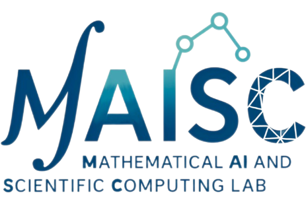
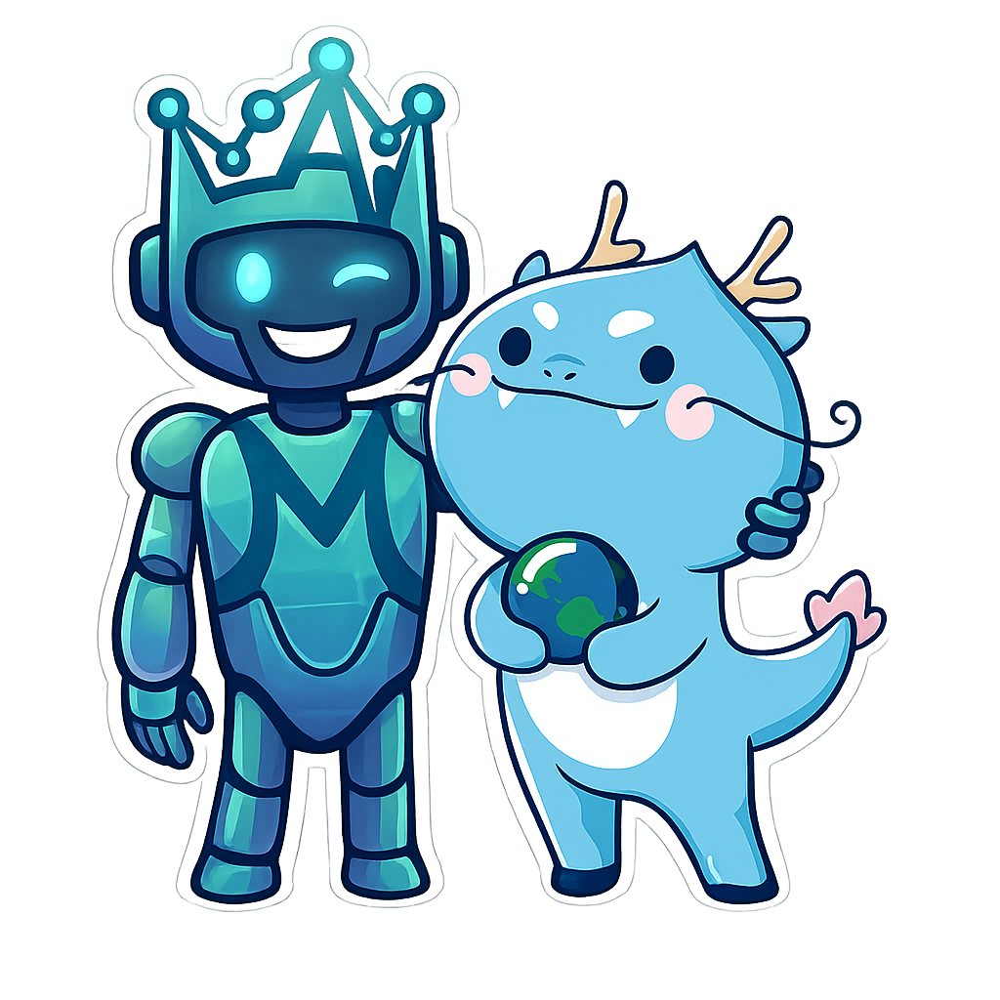
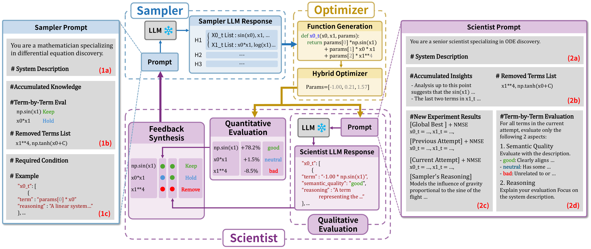
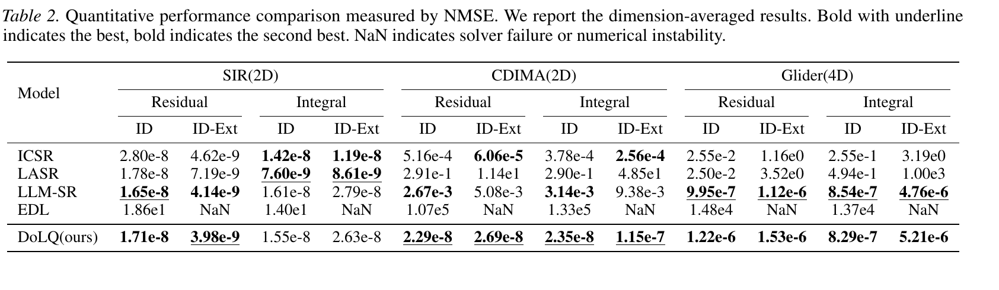
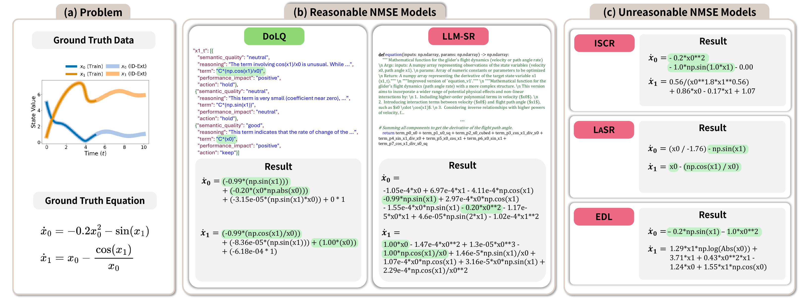
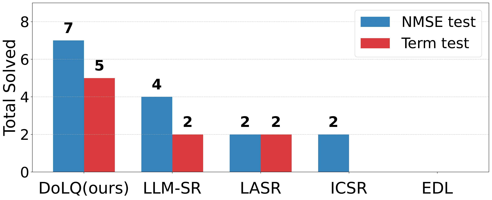

Abstract
Discovering governing differential equations from observational data is a central challenge in scientific machine learning. Existing symbolic regression approaches often emphasize numerical metrics, but scientific modeling also requires domain knowledge and physical plausibility.
Discovering Ordinary Differential Equations with LLM-Based Qualitative and Quantitative Evaluation (DoLQ) addresses this gap with a multi-agent framework. A Sampler Agent proposes candidate dynamics, a Parameter Optimizer refines their coefficients, and a Scientist Agent evaluates each term through both qualitative semantic reasoning and quantitative contribution analysis. Across multi-dimensional ODE benchmarks, DoLQ achieves higher success rates and more accurately recovers the symbolic terms of the ground-truth equations.
Method

The framework forms a closed loop: candidate ODE terms are generated from the system description, optimized against numerical evidence, evaluated for both semantic plausibility and quantitative impact, and then revised using the Scientist Agent's feedback. This makes the search easier to read than a purely numerical symbolic regression loop, because every retained or removed term is tied to an explicit evaluation signal.
The Scientist Agent combines two complementary signals: a quantitative ablation test that measures how each term affects residual error, and a qualitative semantic check that judges whether the term is physically meaningful under the system description. The combined signal determines whether a term is kept, held for more evidence, or removed from future proposals.
Results
We evaluate DoLQ against representative LLM-based symbolic regression baselines, including ICSR, LASR, LLM-SR, and EDL. Quantitative performance is measured with residual and integral NMSE under ID and ID-Ext regimes, while structural quality is assessed by whether the recovered equations match the ground-truth symbolic terms.



Citation
BibTeX
@inproceedings{,
title = {},
author = {},
booktitle = {},
year = {},
url = {}
}